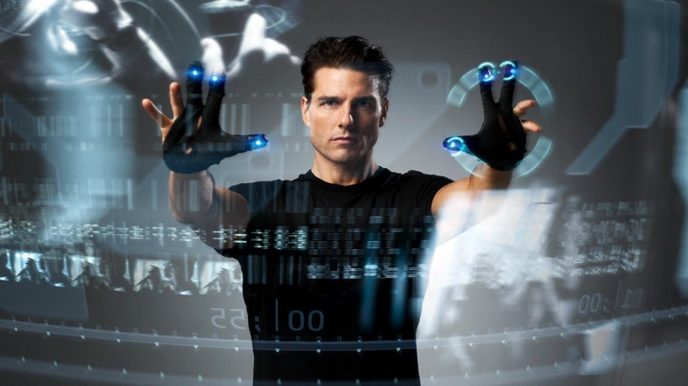

Minority Report é um filme de ficção científica neo-noir lançado em 2002 estrelado por Tom Cruise e dirigido por Steven Spielberg. O roteiro é baseado no conto com o mesmo nome de Philip K. Dick. Ele é definido principalmente em Washington, DC , e Northern Virginia no ano de 2054, onde "Pré-Crime", um departamento de polícia especializada, apreende criminosos com base no conhecimento prévio fornecido por três videntes chamados "precogs". O elenco inclui Tom Cruise como Chefe de Pré-Crime John Anderton, Colin Farrell como Departamento de Justiça agente de Danny Witwer, Samantha Morton como a precog sênior Agatha, e Max von Sydow como superior Lamar Burgess de Anderton. O filme combina elementos de gênero noir tecnologia , whodunit , suspense e ficção científica, bem como um filme de perseguição tradicional, como o principal protagonista é acusado de um crime que não cometeu e se torna um fugitivo.
Foi um dos filmes mais bem avaliados de 2002. Ele recebeu elogios por suas escrita, visual e temas, mas ganhou algumas críticas por seu final que foi considerado incompatível com o tom do resto do filme. O filme foi nomeado para diversos prêmios e ganhou vários. Ele recebeu uma indicação ao Oscar para Melhor Edição de Som, e onze Saturn Award nomeações, incluindo Melhor Ator, Melhor Ator Coadjuvante, e Saturn Award de Melhor Música, vencendo Melhor Filme de ficção científica ,Melhor Direção, Melhor Roteiro e Melhor Atriz Coadjuvante.
Sinópse

Em abril de 2054, a polícia PreCrime de Washington, DC, pára os assassinos antes de agir, reduzindo a taxa de assassinatos a zero. Os assassinatos são previstos usando três seres humanos mutados, chamados "Precogs", que "previsualizam" crimes recebendo visões do futuro. Os supostos assassinos estão aprisionados em sua própria realidade virtual feliz. O governo federal está à beira de adotar o polêmico programa.
Bilheteria

O filme foi um sucesso comercial, ganhando mais de US $ 358 milhões no mundo todo contra um orçamento total de US$ 142 milhões (incluindo a publicidade). Mais de quatro milhões de DVDs foram vendidos em seus primeiros meses de lançamento.
Crítica
 François Truffaut: Crítico Cinematográfico
François Truffaut: Crítico Cinematográfico
Minority Report tem aclamação por parte da crítica especializada. Com o Tomatometer de 91% em base de 234 críticas, o Rotten Tomatoes chegou ao consenso: "Instigante e visceral, Steven Spielberg combina idéias de alto conceito e ação de alta octanagem neste suspense sci-fi rápido e febril". Por parte da audiência do site tem 79% de aprovação.